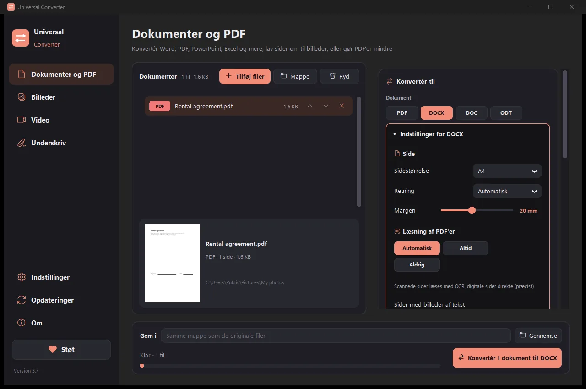

Træk tabeller fra PDF-fakturaer over i Excel
At skrive fakturalinjer af i hånden er langsomt og giver nemt fejl. Universal Converter finder tabellerne i hver faktura, uanset om det er en PDF, en scanning eller et foto, og lægger dem i et regneark, som du kan sortere, summere og importere.
Sådan installerer og opdaterer du
- Åbn den hentede .dmg-fil, og træk Universal Converter til Programmer.
- Åbn appen. Første gang blokerer macOS den, fordi den ikke er signeret af Apple: klik på OK.
- Åbn Systemindstillinger > Anonymitet og sikkerhed, rul ned, klik på Åbn alligevel, og indtast din adgangskode. Det gør du kun én gang.
Opdateringer: hvis du tillader det, når appen åbner første gang, søger den efter nye versioner, hver gang den starter, kontrollerer deres digitale signatur og installerer dem, når du vælger det.
Sådan installerer og opdaterer du
- Tryk på Download til Android på din telefon.
- Åbn den hentede fil. Hvis Android spørger, så tillad din browser eller filhåndtering at installere apps.
- Tryk på Installer.
Opdateringer: når du åbner appen, søger den efter en ny version og siger til, når den er klar. Download den på samme måde, og installer den oven på den gamle; dine indstillinger bevares.
Sådan installerer og opdaterer du
- Download .AppImage-filen.
- Gør den eksekverbar: højreklik, åbn Egenskaber > Tilladelser, og tillad at den køres som program (eller i en terminal: chmod +x Universal-Converter-*.AppImage).
- Dobbeltklik på den. Intet installeres: appen er denne ene fil.
Opdateringer: hvis du tillader det, når appen åbner første gang, søger den efter nye versioner, hver gang den starter, kontrollerer deres digitale signatur og erstatter AppImage-filen, hvor den ligger.
Sådan gør du
- Åbn Universal Converter.
- Træk dine filer eller en hel mappe ind i vinduet, eller klik på Tilføj filer.
- Vælg Excel (eller CSV). Tilføj flere fakturaer på én gang for at konvertere dem i ét hug.
- Klik på Konvertér. De nye filer gemmes ved siden af originalerne eller i den mappe, du vælger.

Hvorfor offline?
Universal Converter udfører arbejdet på din egen enhed. Dine filer forbliver private, store filer er intet problem, og det virker uden internetforbindelse.
Mere, den kan
- Konvertér en PDF til Word
- Konvertér Word-dokumenter til PDF
- Saml flere filer i én PDF
- Komprimér en PDF til en størrelse, du vælger
- Komprimér en PDF til 100 KB, 200 KB eller enhver størrelse til onlineformularer
- Konvertér PDF-sider til JPG-billeder
- Gør et scannet dokument til en redigerbar Word-fil
- Konvertér billeder mellem JPG, PNG, WEBP og mere
- Skift størrelse på billeder, eller formindsk dem til en filstørrelse
- Skift størrelse på et foto eller en underskrift til 20 KB, 50 KB eller præcise pixels
- Saml fotos i én PDF
- JPG til PDF under 100 KB
- Kopiér teksten fra et billede (OCR)
- Komprimér en video uden at uploade den
- Konvertér videoer mellem MP4, MKV, WebM, MOV og AVI
- Gem lyden fra en video som MP3
- Lav en GIF af en video
- Træk tabeller fra en PDF over i Excel
- Konvertér et kontoudtog i PDF til Excel
- Underskriv en PDF
- Udfyld en PDF-formular